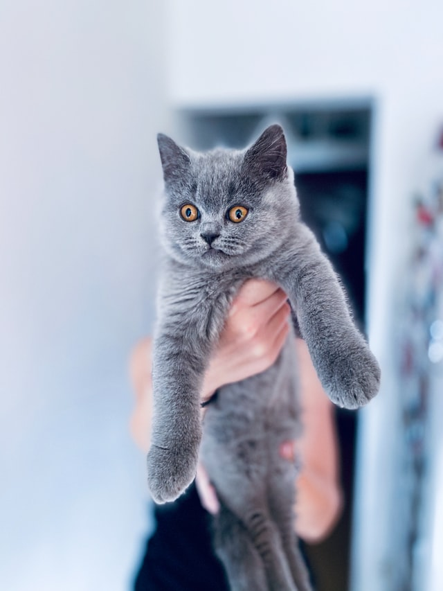

Actual Cats
About Actual Cats
I only briefly went over what determines a cat being an actual cat. To give more insight, actual cats are not cats at all. They are evil little Russian probes sent to destroy the average population. This cat for example, is being playfully held by a human. The cat's exception is a manipulation tactic, he wants you to let your guard down and trust him so he cant take your last breath from you with his vile little toe beans.
A List of ACTUAL Cat breeds to look out for.
- Russian Blue (RUSSIAN!!!!)
- Domestic Shorthair (They aren't domestic)
- Siamese